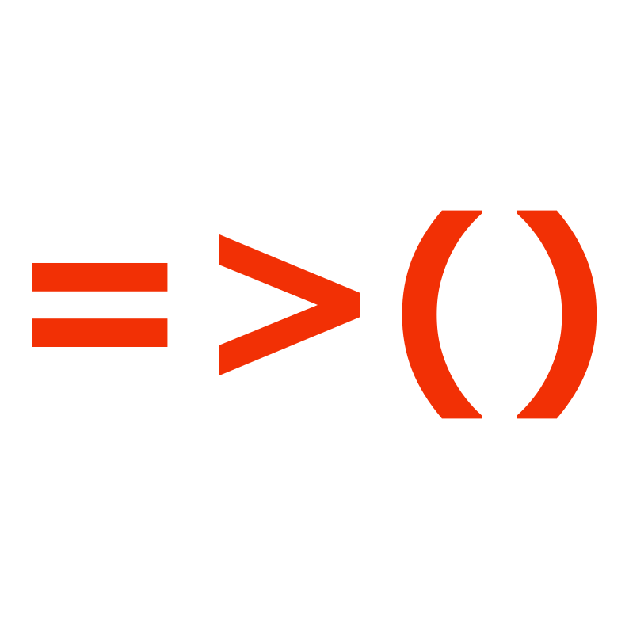

JavaScript & The Document Object Model
HTML, CSS and JavaScript - The Three Tradies
Building websites is just like building houses. There are lots of different parts involved, all of which need to work together to create a functional and attractive finished product. So while a house needs a carpenter, decorator and an electrician to get up and running, a website has its own versions of these!
HTML - The Carpenter
HTML isn't really a programming language believe it or not (neither is CSS), but rather a markup language. It's role is literally to label the content on the page and tell the browser what kind of content it is - simple! This HTML structure makes up the basic body or frame of the website. Carpenters do the same job when building a house - they lay out the basic structure and location of the various areas in the form of a frame. This frame could function as a very barebones house if required, but it doesn't really do the job by today's standards. HTML is the same; all you need for a webpage to display is an HTML document! But just by itself it will look pretty darn average (read: shit). We need some help from some other tradies!
CSS - The Interior Designer
Once our house frame is built, we need to make it cosy and suit our personal design tastes! That's where our Interior Designer - or CSS comes into play. CSS is another markup language just like HTML, but this time instead of laying out our frame and specifying what is what, we are taking the elements of our frame and specifying how we want them to look. CSS has an absolutely gigantic array of different aspects you can change on virtually any element, meaning you can decorate your webpage in literally thousands of different ways! Just like different designers can make the inside of a house look completely different, so too can different CSS styles completely change the look and feel of a website.
JavaScript - The Electrician
JavaScript is a very different beast when compared to HTML and CSS - and it is definitely a bonafide programming language. It enables users to interact with and control certain elements being displayed on a webpage, much like you could turn the lights on and off in a house. While HTML and CSS create the website and its design/layout, JavaScript brings it to life. Almost anything is possible when correctly using HTML, CSS and JavaScript together in a complementary way.

Control Flow & Loops
Control Flow
A computer program is nothing but a big long list of instructions. This is what's great about computers - they do exactly what you tell them to! The biggest downside of computers is also that they do exactly what you tell them to - not what you want them to! A bit of JavaScript is just like any other programming language - a list of instructions that the computer performs one after the other. However, sometimes an instruction might be something like "go read this other instruction fifty lines down the page and come back when you are done", or "do this same instruction fifty times". Having a good command over the order in which you tell the computer to execute its commands is called having a good Control Flow!
Loops
Loops are one of the most fundamental concepts in computer programming. Sometimes you want the computer to perform the same set of instructions multiple times, or perhaps on different things. Say you have hundreds of balloons and you need to know how many of each colour you have. You could write out the same set of instructions hundreds of times to record each colour for each balloon, or you could write a loop once, and have it repeat hundreds of times. Much easier! It's all about making life easy and writing as little code as possible.
The DOM:
Delayed Onset Muscle Soreness
Document Object Model
The great thing about JavaScript is that it can change or move (or remove!) elements and styles from our HTML and CSS. This means that user interaction can change the way the webpage displays. In order to do this, the browser provides a JavaScript object for your JavaScript code to use called the Document Object. This object is basically like a family tree that contains all of the page's elements and styles. Using this tree we can write JavaScript that specifically targets virtually anything on the page and changes it how we see fit! The DOM (Document Object Model) is like the bridge that connects our JavaScript code to the HTML and CSS on the page.
Within the DOM, every changeable aspect of the document is called a 'node'. The document itself, the HTML elements, the contents of those elements - all of these are nodes that can be directly access and changed via the DOM.
Objects, Arrays, and Functions
Storing Data
Computer programs basically carry out operations on sets of data. So we have to have somewhere to store the data, right? Objects and Arrays are two different types of data storage that allow for large amounts of data to be stored. So what's the difference? Well, depending on the type of data being stored, you might prefer one over the other:
Objects
Objects are essentially a collection of key:value pairs. So if your
data set has lots of information about one particular thing (or
group of things), then an object might be the way to go. For
example, you could use an object to record all of the information
about a car:
let car = {
make: "kia"
model: "carnival"
engine: "v6"
colour: "blue"
}
Objects have the added advantage of being able to store 'methods' as
well, which are functions specific to that object (more on functions
below). So in our example we could have methods like "startEngine()"
or "lowerWindows()" etc. You may not realise it, but if you've ever
written any JavaScript before you have probably already used
objects. The famous "console.log()" command is simply accessing the
"console" object and calling its "log" method.
Objects don't store their properties and methods in any particular
order, as each value has an associated key to make it easy to find. So
changing the make of our car is as easy as:
car.make = "ferrari"
Adding new properties is just as easy:
car.owner = "Pete"
The main disadvantage of Objects is iterability (if that's a
word...?). Let's talk about Arrays and get into exactly what this
means!
Arrays
Arrays are relatively simple when compared to Objects. They simply hold a long list of items, with each item given an index by which it can be located (which helpfully starts at 0, not 1). This has certain advantages and disadvantages. Since none of the items has a key to locate it like an object would, finding certain things in an array can be a bit trickier. This is where iteration comes in. Searching through arrays using loops is a very powerful way of manipulating data once you understand how to do it. So while it's not as simple as getting a property from an object, with an array you can select multiple different sections of the data and manipulate them in a variety of ways that would be much more time-consuming if the data was in object form.
Of course, like all thing in programming, this is just the tip of the iceberg. Things get much more complicated when you start seeing arrays of objects and vice versa! Again, I expect practice will make perfect when it comes to efficiently extracting information from complex data structures!
Functions
So once we have extracted our data from our objects/arrays/whatever, we will probably want to do something to it, right? What if we want to do the same thing to a heap of different bits data from different places? Programmers are lazy and try to always avoid writing more code than they have to. Remember - DRY coding (Dont. Repeat. Yourself) is better than WET coding (Write. Everything. Twice.)
Instead of writing out the same piece of code every single time they need to do it, it's better to create a function. Functions are basically chunks of code that you can call at any time. You can pass them different data to run the same operations on. Lets say you have some objects and you want to change their color properties to blue. You simply write the code to do it once in a function, then pass the objects to the function to run the code on. Timesaver!